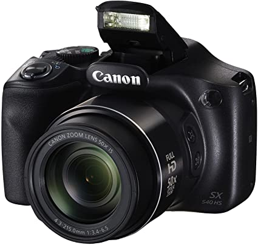

AQUI É O TITULO
Natal é época de renascimento; é época de reacender o fogo da vida, de renovar os sonhos e metas para o ano novo que já se anuncia. É época também de celebrar todas as conquistas vividas e os objetivos alcançados. Esta é a época da virada, é tempo de planejar um ano ainda melhor do que este que está dando adeus. É tempo de reafirmar parcerias, e olhar para a frente com determinação e otimismo, levando conosco todas as lições que aprendemos. Desejamos a você um Feliz Natal e um Ano Novo muito próspero.Natal é época de renascimento; é época de reacender o fogo da vida, de renovar os sonhos e metas para o ano novo que já se anuncia. É época também de celebrar todas as conquistas vividas e os objetivos alcançados. Esta é a época da virada, é tempo de planejar um ano ainda melhor do que este que está dando adeus. É tempo de reafirmar parcerias, e olhar para a frente com determinação e otimismo, levando conosco todas as lições que aprendemos. Desejamos a você um Feliz Natal e um Ano Novo muito próspero. Esperamos, por mais um ano, compartilhar grandes momentos e conquistas!Natal é época de renascimento; é época de reacender o fogo da vida, de renovar os sonhos e metas para o ano novo que já se anuncia. É época também de celebrar todas as conquistas vividas e os objetivos alcançados. Esta é a época da virada, é tempo de planejar um ano ainda melhor do que este que está dando adeus. É tempo de reafirmar parcerias, e olhar para a frente com determinação e otimismo, levando conosco todas as lições que aprendemos. Desejamos a você um Feliz Natal e um Ano Novo muito próspero. Esperamos, por mais um ano, compartilhar grandes momentos e conquistas!Natal é época de renascimento; é época de reacender o fogo da vida, de renovar os sonhos e metas para o ano novo que já se anuncia. É época também de celebrar todas as conquistas vividas e os objetivos alcançados. Esta é a época da virada, é tempo de planejar um ano ainda melhor do que este que está dando adeus. É tempo de reafirmar parcerias, e olhar para a frente com determinação e otimismo, levando conosco todas as lições que aprendemos. Desejamos a você um Feliz Natal e um Ano Novo muito próspero. Esperamos, por mais um ano, compartilhar grandes momentos e conquistas!Natal é época de renascimento; é época de reacender o fogo da vida, de renovar os sonhos e metas para o ano novo que já se anuncia. É época também de celebrar todas as conquistas vividas e os objetivos alcançados. Esta é a época da virada, é tempo de planejar um ano ainda melhor do que este que está dando adeus. É tempo de reafirmar parcerias, e olhar para a frente com determinação e otimismo, levando conosco todas as lições que aprendemos. Desejamos a você um Feliz Natal e um Ano Novo muito próspero. Esperamos, por mais um ano, compartilhar grandes momentos e conquistas! Esperamos, por mais um ano, compartilhar grandes momentos e conquistas!
Nosso estabelecimento
Nosso estabelecimento está no coração da cidade
AQUI É O TITULO
- Atendimento aos Clientes
- espaço
- beneficio 3
- beneficio 4

Natal é época de renascimento; é época de reacender o fogo da vida, de renovar os sonhos e metas para o ano novo que já se anuncia. É época também de celebrar todas as conquistas vividas e os objetivos alcançados. Esta é a época da virada, é tempo de planejar um ano ainda melhor do que este que está dando adeus. É tempo de reafirmar parcerias, e olhar para a frente com determinação e otimismo, levando conosco todas as lições que aprendemos. Desejamos a você um Feliz Natal e um Ano Novo muito próspero. Esperamos, por mais um ano, compartilhar grandes momentos e conquistas!Natal é época de renascimento; é época de reacender o fogo da vida, de renovar os sonhos e metas para o ano novo que já se anuncia. É época também de celebrar todas as conquistas vividas e os objetivos alcançados. Esta é a época da virada, é tempo de planejar um ano ainda melhor do que este que está dando adeus. É tempo de reafirmar parcerias, e olhar para a frente com determinação e otimismo, levando conosco todas as lições que aprendemos. Desejamos a você um Feliz Natal e um Ano Novo muito próspero. Esperamos, por mais um ano, compartilhar grandes momentos e conquistas!Natal é época de renascimento; é época de reacender o fogo da vida, de renovar os sonhos e metas para o ano novo que já se anuncia. É época também de celebrar todas as conquistas vividas e os objetivos alcançados. Esta é a época da virada, é tempo de planejar um ano ainda melhor do que este que está dando adeus. É tempo de reafirmar parcerias, e olhar para a frente com determinação e otimismo, levando conosco todas as lições que aprendemos. Desejamos a você um Feliz Natal e um Ano Novo muito próspero. Esperamos, por mais um ano, compartilhar grandes momentos e conquistas!